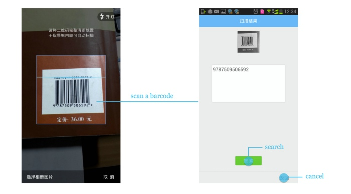

Team Role
Product Manager
Duration
07/2011 - 06/2014
3 years
Methods
Competitive Analysis
Data-driven Design
Fast Usability Test
Tools
Axure
Bookmark Redesign
QQ Browser once had two separate bookmark systems. One bookmark system was shown on the homepage of browser, which we called the homepage bookmark. Homepage bookmark was designed to mark the frequently-used websites. Users were able to send some of these homepage bookmarks to desktop of their mobile phones. Another bookmark system was shown on the bookmark page, which could be accessed through main menu of the browser. We called this bookmark system the common bookmark. Common bookmark was designed before the homepage bookmark to offer the basic capability of saving bookmarks and it was not that different from the homepage bookmark except it was not shown on the browser's homepage. There was a kind of redundancy here. Besides, most users were sticking to a particular kind of bookmark system they were familiar with, and were not willing to change their habits. Thus we separated the users of bookmark into two groups because of the bad design.
To solve this program, we redesigned to bind in these two bookmark systems into one. The key design concept was that all bookmarks were stored on the bookmark page, while users could send some frequently-used bookmarks to the browser's homepage for convenient use, just like users could send some bookmarks to the desktop of mobile phone.
QRcode Scanning
QR Code could store the information of a paragraph of words, a HTML link, a name card, etc. The principle of QR Code Scanning was that if we use the camera to shoot a QR Code, QQ Browser could decode the QR Code and get the information stored in it. We reinforced the QR Code Scanning to make it much stronger. First of all, QQ Browser could recognize a paragraph of words, and a HTML link, which could be either stored as a bookmark or open in a new window. Secondly, QQ Browser could recognize the information of a name card, and users could save the information directly as a name card in contacts, or dial the phone number offered, or send an email to the email address offered.

What was more, not only the QR Code shot by the camera could be recognized, the QR Code stored locally on the phone and the QR Code showed on a webpage could also be recognized, which was quiet original because other apps or software could only recognize the QR Code shot by the camera.

In addition, we also supported the recognition of barcode, which was widely used on almost every product. Users could use QQ Browser to recognize the barcode and search for more information on the Internet. In the future, users might be able to buy the product they wanted by using QQ Browser to scan the barcode.
Fraudulent Website Check
It was the browser's responsibility to protect users from fraudulent websites and guarantee safety. So we designed the fraudulent website check system. Every time a new link is about to be open, the browser would check the security while loading it. If the website was identity verified, a green icon would appear on the address bar to notify safety, without interrupting user's workflow. If, on the other hand, a fraudulent website is to be open, a red icon will appear on the address bar and QQ browser will interrupt the loading process to show a warning page, indicating that the website was dangerous, might cause password leak, for instance. In-detail information about this fraudulent website will be provided, with an advise to close the window.

As to websites related to online payment, such as Paypal, Amazon and Taobao, the website security status would be checked under more strict standards.
Besides, the database of fraudulent websites is updated continuously, to enablt QQ Browser to be able to deal with emergent situation. For instance, if a newly-appeared website tends to be dangerous, QQ Browser could update database in a very short time and make sure the users could get appropriate in-time warning, if attempted to view this website.

User Feedback and Loyalty Cultivation
I communicated with users from all over China via online IM, phone calls, emails, face-to-face interview, etc. I dealt with more than 500 feedbacks a day. I sorted these feedbacks into different categories according to their worth. About 5% of the feedbacks were very valuable, these feedbacks either reflected severe bugs or hard-to-accept designs. Once getting these feedbacks, I would immediately build up a team to revise our designs and codes. If necessary, an updated version would be released within 3 days since the feedback.
Besides, I cultivated users' passion and loyalty by running various activities both online and offline. Recently, at the end of year 2012, I sent letters of thanks and gifts to some valuable users who had been supportive during the whole year. Their happiness of getting these letters and gifts were spread out through online social networking such as Weibo and attracted many new users of QQ Browsers. Each month, a name list of valuable users would be updated and the users on the list would get a gift, and their name would appear on the thanks page of each released version of QQ Browser. Now, thanks to the loyalty cultivation plan, we have more than 500 valuable users who actively offered their help to us, such as being the admin of online forum, answering other users' questions about the product, and pointing out the bugs and bad designs we left out.